SOBRE A BANDA
The Cure é uma banda britânica de rock fundada em 1976, em Crawley, Inglaterra, originalmente chamando-se "Easy Cure". A banda passou por várias mudanças de formação, com o vocalista, guitarrista e principal compositor Robert Smith sendo o membro constante e principal responsável por sua direção musical e criativa. Iniciaram a sua carreira ainda muito influenciados pelo punk, porém, rapidamente começaram a desenvolver sons mais sombrios e densos, assim como letras mais complexas e angustiantes — influenciadas por literatura existencialista, niilista, gótica e de fantasia de autores como Sartre, Kafka, Peake, Camus, Poe, Farmer entre outros — sem cedências, conseguindo, com essa combinação, a sua imagem de marca e um estatuto de culto que perdura até hoje.
Em meados dos anos 1980, já com alguma abertura a sons e letras mais comerciais, obtiveram grande sucesso entre as massas, com diversos álbuns e singles a alcançar grande exposição e popularidade em boa parte do globo. Na segunda metade dos anos 1990 sofrem de algum distanciamento e rechaço por parte da imprensa musical e também dos fãs — estes já tinham partido em novas direções musicais e tendências — assim como de sérios problemas internos que os paralisaram por um longo período e os penalizam comercialmente. Com a chegada do novo século, a banda acabou por vir a ser, paulatinamente, reconhecida internacionalmente como uma das mais influentes do rock alternativo e uma nova vaga de fãs e de entusiasmo reavivou a banda com turnês enormes e pavilhões esgotados no mundo ocidental.
Em 2008, a banda tinha editado treze álbuns de estúdio, além de diversos singles, coletâneas, apresentações ao vivo e documentários de gravação.
INTEGRANTES E LANÇAMENTOS
| Período | Membros | Lançamentos |
|---|---|---|
| Maio de 1978 - novembro de 1979 | Robert Smith. Lol Tolhurst – bateria. Michael Dempsey – baixo, backing vocal e vocal principal | "Killing an Arab" (1978), Three Imaginary Boys (1979), "Boys Don't Cry" (1979), "Jumping Someone Else's Train" (1979), "The Peel Sessions" (1988) |
| Novembro de 1979 – dezembro de 1980 | Robert Smith – guitarras, vocais, gaita. Lol Tolhurst – bateria. Simon Gallup – baixo. Matthieu Hartley – teclados | "Seventeen Seconds" (1980) |
| Dezembro de 1980 – junho de 1982 | Robert Smith - guitarra, vocais, teclado, violoncelo, baixo. Lol Tolhurst - bateria, teclado. Simon Gallup - baixo, teclado | Faith (1981), "Charlotte Sometimes" (1981), Pornography (1982) |
| Junho de 1982 – junho de 1983 | Robert Smith – guitarras, vocais, baixo, teclados. Lol Tolhurst – teclados, bateria eletrônica | "Let's Go to Bed" (1982), "The Walk" (1983) |
| Junho de 1983 – janeiro de 1984 | Robert Smith – guitarras, vocais, teclados. Lol Tolhurst – teclados, bateria eletrônica. Phil Thornalley – baixo. Andy Anderson – bateria, percussão | "The Love Cats" (1983) |
| Janeiro – outubro de 1984 | Robert Smith – guitarras, vocais, teclados, violino, gaita, flauta doce. Lol Tolhurst – teclados, bateria eletrônica. Phil Thornalley – baixo. Andy Anderson – bateria, percussão. Porl Thompson – guitarra, teclado, saxofone | The Top (1984) (without Thornalley), Concert: The Cure Live (1984), Live in Japan (1985) |
| Outubro – novembro de 1984 | Robert Smith – guitarras, vocais, teclados, violino, gaita, flauta doce. Lol Tolhurst – teclados, bateria eletrônica. Phil Thornalley – baixo. Porl Thompson – guitarras, teclados, saxofone. Vince Ely – bateria (apenas em turnê) | - |
| Novembro de 1984 – abril de 1987 | Robert Smith – guitarras, vocais, teclados. Lol Tolhurst – teclados, bateria eletrônica. Porl Thompson – guitarra, teclado, saxofone. Simon Gallup – baixo. Boris Williams – bateria, percussão. | The Head on the Door (1985), Half an Octopuss/Quadpus (1985), The Cure in Orange (1987), Kiss Me, Kiss Me, Kiss Me (1987) |
| Abril de 1987 – abril de 1989 | Robert Smith – vocais, guitarra, teclados. Lol Tolhurst – teclados, bateria eletrônica. Porl Thompson – guitarras, teclados, saxofone. Simon Gallup – baixo. Boris Williams – bateria, percussão. Roger O'Donnell – teclados. | Disintegration (1989) |
| Abril de 1989 – junho de 1990 | Robert Smith – guitarras, vocais, teclados, baixo. Porl Thompson – guitarras, teclados, saxofone. Simon Gallup – baixo. Boris Williams – bateria, percussão. Roger O'Donnell – teclados. | Entreat (1990) |
| Junho de 1990 – início de 1993 | Robert Smith – guitarras, vocais, teclados, baixo. Porl Thompson – guitarras, teclados, saxofone. Simon Gallup – baixo. Boris Williams – bateria, percussão. Perry Bamonte – teclados, guitarras, baixo. | "Never Enough" (1990), Play Out (1991), Wish (1992), Show (1993), Paris (1993) |
| Início de 1993 – final de 1994 | Robert Smith – guitarras, vocais, teclados, baixo. Simon Gallup – baixo. Boris Williams – bateria, percussão. Perry Bamonte – guitarras, teclados, baixo. | "Purple Haze" (1993), "Burn" (1994) |
| Primavera de 1995 – final de 2001 | Robert Smith – guitarras, vocais, teclados, baixo. Simon Gallup – baixo. Perry Bamonte – guitarras, teclados, baixo. Roger O'Donnell – teclados. Jason Cooper – bateria, percussão. | Wild Mood Swings (1996), Bloodflowers (2000) |
| Final de 2001 | Robert Smith – guitarras, vocais, teclados, baixo. Simon Gallup – baixo. Perry Bamonte – guitarras, teclados, baixo. Roger O'Donnell – teclados. Jason Cooper – bateria, percussão. Boris Williams – percussão (convidado). | Acoustic Hits (2001) |
| Final de 2001 – maio de 2005 | Robert Smith – guitarras, vocais, teclados, baixo. Simon Gallup – baixo. Perry Bamonte – guitarras, teclados, baixo. Jason Cooper – bateria, percussão. Roger O'Donnell – teclados. | Trilogy (2003), The Cure (2004) |
| Maio – junho de 2005 | Robert Smith – guitarras, vocais, teclados, baixo. Simon Gallup – baixo. Jason Cooper – bateria, percussão. | Love (2005) |
| Junho de 2005 – maio de 2011 | Robert Smith – guitarras, vocais, teclados, baixo. Simon Gallup – baixo. Jason Cooper – bateria, percussão. Porl Thompson – guitarras. | Festival 2005 (2006), 4:13 Dream (2008) |
| Maio – junho de 2011 | Robert Smith – guitarras, vocais, teclados, baixo, gaita. Simon Gallup – baixo. Jason Cooper – bateria, percussão. Lol Tolhurst – teclados, percussão (convidado). Roger O'Donnell – teclados, percussão (convidado). | - |
| Junho – novembro de 2011 | Robert Smith – guitarras, vocais, teclados, baixo. Simon Gallup – baixo. Jason Cooper – bateria, percussão. Roger O'Donnell – teclados. | Bestival Live 2011 (2011) |
| Novembro de 2011 | Robert Smith – guitarras, vocais, teclados, baixo, gaita. Simon Gallup – baixo. Jason Cooper – bateria, percussão. Roger O'Donnell – teclados, percussão. Lol Tolhurst – teclados, percussão (convidado). | - |
| Dezembro de 2011 – maio de 2012 | Robert Smith – guitarras, vocais, teclados, baixo. Simon Gallup – baixo. Jason Cooper – bateria, percussão. Roger O'Donnell – teclados, percussão. | - |
| Maio de 2012 – outubro de 2022 | Robert Smith – guitarras, vocais, teclados, baixo, gaita, flauta doce, pandeiro. Simon Gallup – baixo. Jason Cooper – bateria, percussão. Roger O'Donnell – teclados, percussão. Reeves Gabrels – guitarras, baixo. | 40 Live (Curætion-25 + Anniversary) (2019), Songs of a Lost World (2024) largely recorded in 2019 |
| Outubro de 2022 – presente | Robert Smith – guitarras, vocais, teclados, baixo, percussão, flauta doce. Simon Gallup – baixo, teclados. Jason Cooper – bateria, percussão. Roger O'Donnell – teclados. Reeves Gabrels – guitarras, baixo. Perry Bamonte – teclados, guitarras, baixo. | Novembre: Live in France 2022" (2024) |
FOTOS DOS INTEGRANTES
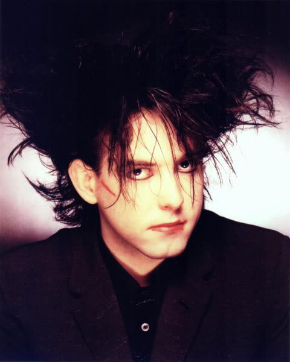
Robert Smith
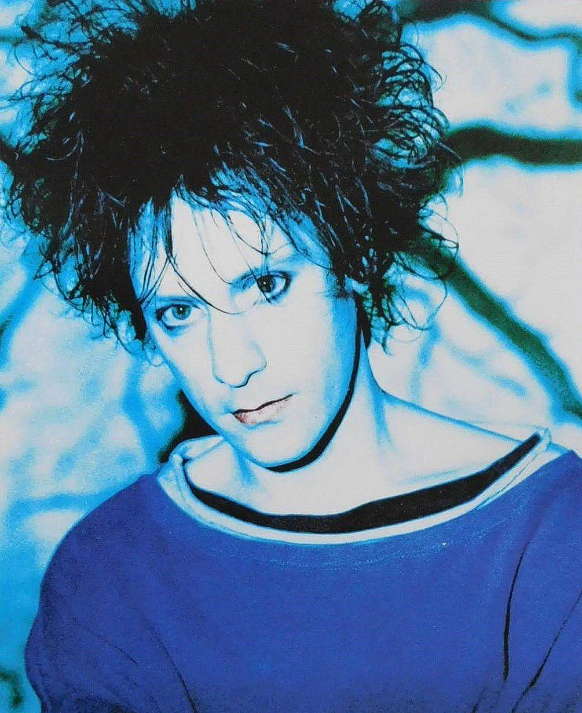
Perry Bamonte
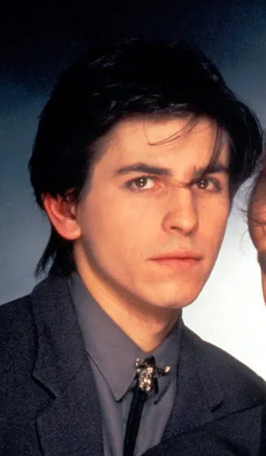
Phil Thornalley
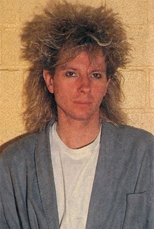
Boris Williams
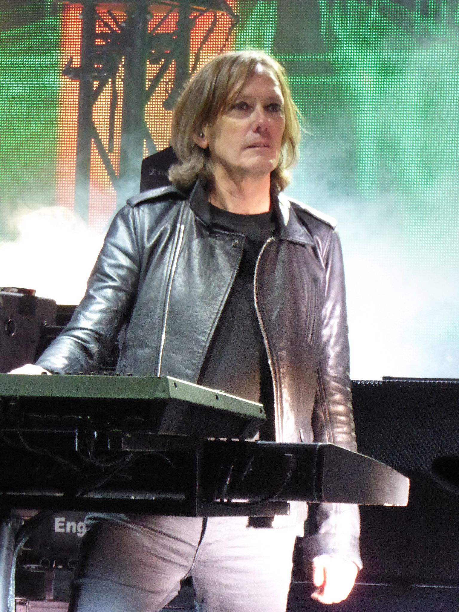
Roger O'Donnell
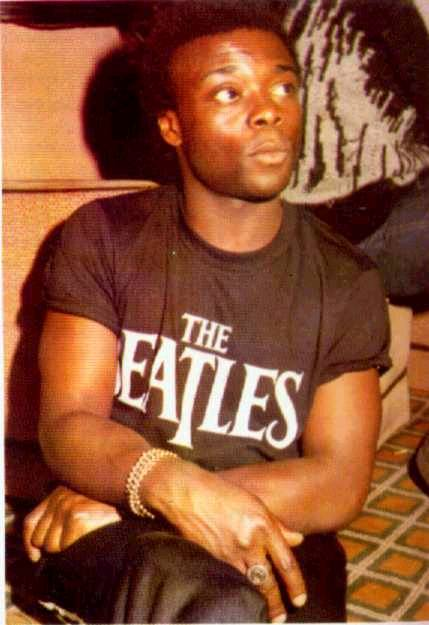
Andy Anderson
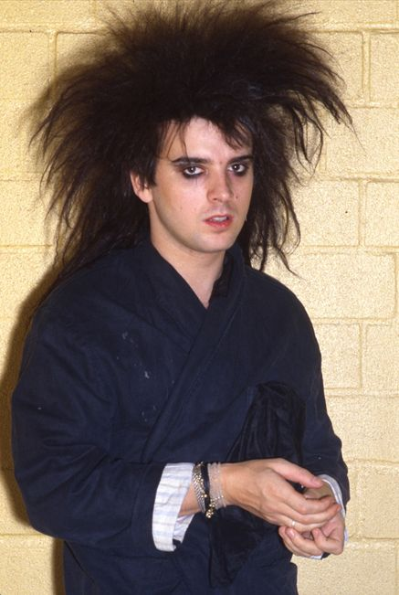
Simon Gallup
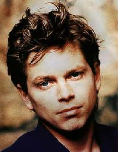
Jason Cooper

Laurence Tolhurst
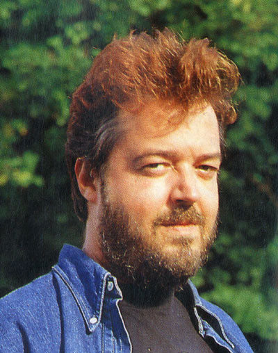
Matthieu Hartley
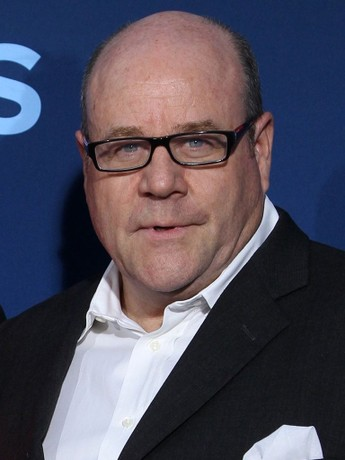
Michael Dempsey
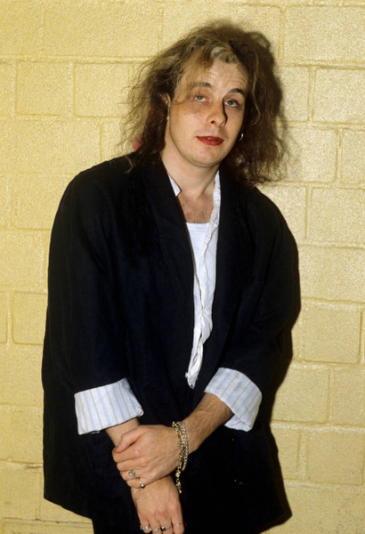
Porl Thompson
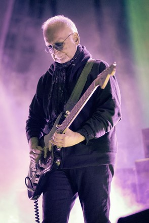